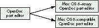

One of the most important goals for Mac OS 8 (formerly known by
the development name "Copland") is the preservation of
compatibility with existing applications. Customers consistently
rank compatibility as a critical factor in their decision whether to
upgrade to a new OS release, with good reason. This article sheds
light on what will and won't be compatible, and gives developers a
road map for ensuring compatibility with the Mac OS 8 release.
As one of the driving forces behind Mac OS 8, compatibility is at the forefront of the
minds of Apple engineers hard at work on this system software release. Given the track
record of nearly seamless compatibility with the Power Macintosh, customers will
expect their existing applications to run under Mac OS 8 with few or no problems.
Apple is working hard to deliver on this promise, and we're beginning to succeed. Most
of the specific information for this article was learned the hard way -- by getting
many existing applications up and running.
Of course, tradeoffs must be made to move the platform forward. If Mac OS 8 were to
remain compatible with all Macintosh software, the performance, reliability, and
stability of the system would suffer. While some customers have been impressed by
the stability of System 7, others would like to experience even fewer crashes and are
willing to upgrade some of their software in the process. Apple's system software
needs to be more stable, while still maintaining compatibility with most applications.
Luckily, there are quite a few techniques that you can use today and guidelines that you
can follow to ensure compatibility with Mac OS 8. This way, you can impress your
friends (and confuse your enemies) at compatibility labs by installing your software
for the first time under Mac OS 8, and walking away 15 minutes later saying, "Gee,
that was easy, everything works!" This is when following all of those Inside Macintosh
chapters, develop articles, and Technotes will finally pay off.
Don't panic: Mac OS 8 isn't the compatibility "day of reckoning" that you've had
nightmares about. I'm sure many of you have been told by Developer Technical
Support, "Here's a really cool trick, but it may break in the future." In some cases,
"the future" is in fact Mac OS 8, but on the other hand many techniques that are no
longer being recommended (which we of course like to call "sick hacks") will continue
to work.
Remember that Mac OS 8 is just the first step in modernizing the Macintosh.
Subsequent system releases will include features such as separate address spaces and
full preemption for all applications. In the future, discouraged techniques will become
areas of incompatibility; so even if your application runs under Mac OS 8, it's worth
cleaning it up in preparation for future systems.
In this article, I'll go over a few things that will no longer work under Mac OS 8 as
well as some of the techniques that will continue to work under Mac OS 8 but will
break in future systems. For the more heinous examples of these techniques, I won't
give code samples -- I don't want people saying "Hey, I did it just like they did in
develop" as an excuse. I'll also discuss some specific case histories of application
compatibility problems, to further illustrate the need to be proactive when planning
for compatibility.
For an overview of Mac OS 8, see http://www.macos.apple.com/macos8
on the World Wide Web, or the article "Copland: The Mac OS Moves Into the
Future" in developIssue 22. Other introductory documents can be found on this
issue's CD. Please keep in mind when reading these materials, as well as this
article, that the terminology has evolved over time and some of it may change
again by the time you read this.*
Before diving into guidelines, warnings, and examples, we'll start with an overview of
exactly which types of software will be compatible with Mac OS 8, which will need to
be updated, and which will need to be redesigned. This article focuses on applications,
but an overview of compatibility in general is helpful to set the stage.
First, the good news: Well-written applications conforming to Macintosh development
guidelines should run without any modification. This includes PowerPC(TM)-native
applications as well as emulated applications. Theoretically, you could have written a
Macintosh Solitaire game in 1984 that would also run under Mac OS 8. There are, of
course, caveats to application compatibility, which will be discussed later in this
article.
Component software is becoming an important part of the Macintosh experience, and
Mac OS 8 will support OpenDoc part editors as well as application-specific plug-ins
-- again, without any modification. Depending on the "parent" application, there may
be issues with plug-in compatibility (as discussed later).
Now, the bad news: Existing extensions, control panels, desk accessories, ASLM
libraries, and most drivers are unsupported for the Mac OS 8 release. Compatibility
tradeoffs needed to be made in these areas to move the system forward and improve
system reliability.
Macintosh power users often try to impress each other by comparing how many
extensions load at startup, gracing their "Welcome to Macintosh" screen with several
rows of happy little icons. The proliferation of INITs has made life as a Macintosh user
exciting, if a little hazardous. With Mac OS 8, we're trying to attack the system
stability problem head on by providing new, more reliable mechanisms for
extensibility and patching. While the original Macintosh was presented as a complete
solution, the Mac OS 8 team has realized that third-party extensibility is part of what
makes the system great. This has led us to make ease of extensibility a key goal of the
system.
As with extensions, for each existing code type that's not supported under Mac OS 8, a
new and much improved mechanism will be provided. In other words, we'll still have
MacHack entries for years to come, and they'll be just as cool but more reliable.
Other, less common software types are also unsupported. These include Text Services
Manager input methods, FSM external file system modules, and debuggers. This article
focuses on application-level issues, so I won't go into a lot of detail in these areas, but
a section on migration paths is included in the article.
For the Mac OS 8 release, the types of applications that developers write can be split
into several major categories. These categories have been defined by the Mac OS 8
project teams, and work is being done to ensure that each of the application types is
fully supported by the Mac OS 8 design. This article doesn't cover each type in detail,
but we'll use the classifications as guideposts for migration and compatibility plans.
USER INTERFACE APPLICATIONS
The first, and most familiar, application type is the user interface application. This
type makes up the majority of applications on the Macintosh. These applications use
windows, menus, and dialogs and are usually document-centric. Examples include
ClarisWorks, Quicken, and Microsoft Excel. There are three variants of this
application type: Mac OS 8-savvy, minimal-adoption, and Mac OS 8-compatible.
Mac OS 8-savvy applications. A Mac OS 8-savvy application is just what you'd
think it would be: an application that takes significant advantage of Mac OS 8 features,
such as preemptive tasking, improved event delivery, and new user interface features.
Because these APIs aren't available under System 7, a Mac OS 8-savvy application
will not run under pre-Mac OS 8 system releases. Note that Mac OS 8-savvy
applications still must maintain a cooperatively scheduled task so that they can call the
Macintosh Toolbox, and this cooperative task lives in the same address space with all
other System 7 and Mac OS 8-savvy applications. It's possible to have other portions
of the application run in separate address spaces, and servers (such as file sharing)
are completely protected from applications.
Minimal-adoption applications. Not all developers may want to or be able to
make the move to a Mac OS 8-only application immediately. The minimal-adoption
application type is intended for these situations. The characteristics of this category
include "fitting in" with the Mac OS 8 look and feel while still maintaining
compatibility with System 7. Some subset of Mac OS 8 features (not APIs) will be
available to these applications, such as the removal of the fixed-size Memory Manager
heap limitation, and the new-look, theme-specific, user interface elements. This
application type is distinguished from System 7 applications by its correct appearance
under Mac OS 8 and its adoption of Mac OS 8 features on a runtime-check basis.
Mac OS 8-compatible applications. Well-written applications authored
originally for pre-Mac OS 8 systems will continue to work under Mac OS 8. If you
follow the guidelines in this article and adhere to documented Macintosh application
programming practices, your application should be Mac OS 8 compatible. Of course, to
take advantage of Mac OS 8 features in your application, you may need to release a new
version.
REAL-TIME APPLICATIONS
Real-time applications are applications that have time constraints on aspects of their
behaviors. If these constraints aren't met, the application either fails or needs to adapt
gracefully to these operating conditions. Examples include data collection applications
such as LabView, multimedia applications such as Premier, and games such as
Marathon. Under Mac OS 8, real-time applications may choose to take advantage of
enhanced timing services and preemptive scheduling to improve their performance. In
some ways, however, Mac OS 8 provides new challenges to these applications, since
virtual memory is always enabled and preemptive scheduling may cause the
application to lose control of the CPU in unforeseen situations. That said, performance
will be vastly improved from the System 7 Virtual Memory Manager, so this shouldn't
be a concern for most developers.
OPENDOC PART EDITORS
OpenDoc part editors are a relatively new application type. OpenDoc will continue to be
an important direction for document-oriented applications under the Mac OS 8 release.
As you'll see throughout this article, OpenDoc is also a suggested migration path for
several types of existing applications.
SERVERS
Servers are a new concept introduced in Mac OS 8. They're preemptively scheduled and
run in their own protected address spaces. These features provide independence from
the cooperative Toolbox environment and mean that servers have greatly enhanced
stability, surviving the crashes of applications or other, ill-behaved servers. New
reentrant services are provided in Mac OS 8 to make servers possible, including
tasking, messaging, memory allocation, file system access, and networking. Only a
subset of the Mac OS 8 APIs are available to servers, and this subset does not include
the Macintosh Toolbox calls (Window Manager, Menu Manager, QuickDraw, and so on).
This means that servers cannot present a user interface. Candidates for servers
include World Wide Web Internet servers, virus checkers, and high-end publishing
print servers.
UTILITY APPLICATIONS
Utility applications manage a single window for user interface and have no menu bar.
To the user, they aren't usually considered a separate application. Mac OS 8 will
support utility applications as a generalized application type, unlike previous system
releases. An additional use of utility applications is to present a user interface on
behalf of a server. For example, a utility application could be used to configure an
e-mail forwarding server with the proper e-mail addresses. Other examples of this
application type include Apple Guide and configuration control panels.
OTHER NON-APPLICATION CLASSIFICATIONS
Three other classifications that are useful to our discussions but don't refer to
applications are extension libraries, patch libraries, and drivers.
Extension libraries. Extension libraries allow additional code to be introduced into
the Code Fragment Manager (CFM) closure for an application. An example use of an
extension library would be to track software launches and quits through CFM
initialization and termination routines to perform software auditing.
Patch libraries. Patch libraries allow patches to be installed into applications
through data-driven means, simplifying the customization process. Patch libraries
apply their patches in only one context, but can be combined with extension libraries
to achieve global-effect patching. The Get/SetTrapAddress methods of the past have
proven difficult or impossible to maintain and have resulted in greatly decreased
system reliability. The patch library mechanism, with associated extension libraries,
provide a more than capable replacement for the pre-Mac OS 8 patching methods.
Drivers.Under Mac OS 8, the device driver mechanism has been rearchitected to
ensure a high-throughput and flexible I/O system. Pre-Mac OS 8 'DRVR'-style
drivers are not supported and so need to be rewritten. As we'll discuss below, some
software written as a driver today may be better written as another application type.
The first step in preparing for Mac OS 8 is determining the migration path your
application will follow. Depending on what type of application you have today, this
could mean a complete rewrite, minor tweaks, or no changes at all.
The most important point along the Mac OS 8 migration path is the first one:
compatibility. Before determining the best way of moving your application forward,
you should ensure that it runs out of the box on Mac OS 8. We'll discuss compatibility
specifics in a later section.
Each System 7 application type has a unique migration path; the sections below cover
the available options.
USER INTERFACE APPLICATIONS
As shown in Figure 1, a System 7-based user interface application has several
alternatives for migration. The simplest alternative is not to revise the application at
all, or, if needed, do the minimum required to make the application Mac OS 8
compatible.
Figure 1. The migration path for a user interface application
Another alternative is to convert the application into an OpenDoc part editor. I'm not
going to go into OpenDoc in this article; if you choose this route, see the article "The
OpenDoc User Experience" in develop Issue 22 for a good overview of how part editors
work from the user's perspective.
If having a single binary for both System 7 and Mac OS 8 is important, the
minimal-adoption option may be appropriate. By migrating to minimal adoption, you
ensure user interface consistency and may be able to take advantage of a limited
number of Mac OS 8 features. For example, more efficient memory management is
possible if you restrict yourself to a subset of the Macintosh Memory Manager API and
don't access Memory Manager heap structures directly.
The most ambitious path for migration is to make the application Mac OS 8 savvy. This
will mean that the same binary won't run under both System 7 and Mac OS 8. If the
application is made Mac OS 8 savvy, it can take advantage of the wide range of
preemptive tasking services, efficient event handling, and an object-oriented version
of the Macintosh Toolbox.
REAL-TIME APPLICATIONS
The migration path for a real-time application is more straightforward than for a
user interface application (see Figure 2). Either the application can move to Mac OS 8
without changes or it can take advantage of additional real-time features provided by
Mac OS 8, becoming a Mac OS 8-specific real-time application. Which path is taken
depends on whether the existing application performs properly under Mac OS 8
without changes. For example, the developer of an application that was using Time
Manager tasks for accuracy-critical timing would want to consider migrating to take
advantage of the improved timing services of Mac OS 8.
Figure 2. The migration path for real-time applications
OPENDOC PART EDITORS
As shown in Figure 3, existing OpenDoc part editors will be compatible with Mac OS 8,
but a part editor can be updated to take advantage of new Mac OS 8 APIs if the developer
chooses. Both Mac OS 8-savvy and existing OpenDoc part editors can work on the same
OpenDoc documents without problems.

Figure 3. The migration path for OpenDoc part editors
FACELESS BACKGROUND APPLICATIONS
Faceless background applications (FBAs), also known as background-only
applications, are supported under Mac OS 8, but the natural migration path for most
FBAs leads to the server application type (see Figure 4).
Figure 4. The migration path for faceless background applications
The preemptive nature of servers makes them easier to write than FBAs, since file
system and networking calls can block until completion instead of being written with
asynchronous calls and chained completion routines. More important, the enhanced
reliability of servers makes this transition an easy decision. One drawback of servers
is that they cannot access the cooperative Toolbox environment, since they're
preemptively scheduled.
DESK ACCESSORIES AND CONTROL PANELS
We'll cover desk accessories and control panels together, since they share many of the
same user interface characteristics. Most user interaction for these types takes place
in a single window, and neither type maintains a full menu bar. All existing desk
accessories and control panels are unsupported under Mac OS 8 and so need to be
rewritten. As shown in Figure 5, the two suggested replacement application types are
utility applications and OpenDoc part editors.
Figure 5. The migration path for desk accessories and control panels
DRIVERS
Figure 6 shows the migration path for drivers. On pre-Mac OS 8 systems, drivers
were typically written for a variety of reasons. The most straightforward use of
old-style drivers was to control hardware devices. With Mac OS 8, a newly designed
driver architecture has been provided for these hardware control drivers.
Figure 6. The migration path for drivers
Another common reason for writing a driver was to get periodic time from the system,
or to present a common interface for other drivers or applications through the
PBControl call. Mac OS 8's server mechanism is a much more capable solution for
these types of products. Servers can get reliable periodic time through the Mac OS 8
kernel's timing services, and messaging or Apple events can be used to communicate
with other servers or applications.
Certain existing drivers will be compatible with Mac OS 8. Display and networking
drivers developed in strict accordance with the guidelines inDesigning PCI Cards and
Drivers for Power Macintosh Computers will work under Mac OS 8 without
modification.
Finally, non-QuickDraw GX printer drivers are not supported under Mac OS 8. Since
the printing mechanism for Mac OS 8 is an improved version of QuickDraw GX,
existing non-GX printer drivers need to be updated to the QuickDraw GX printer
driver model.
EXTENSIONS
Extensions, in the form of both individual INITs and INITs packaged within control
panels, are not supported under Mac OS 8. These extensions, for the most part, can be
divided into two categories: those that need periodic time from the system and those
that operate through global-effect patching. The former will typically be replaced by
servers, while the latter will migrate to either the built-in extensibility services or
the extension library mechanism (as shown in Figure 7).
Figure 7. The migration path for extensions
For extensions that patch traps such as SystemTask to get periodic time to run "on the
dime" of other applications, the Mac OS 8 server model provides a much more
straightforward mechanism. The only drawback to using servers in this way is that the
cooperative Toolbox environment is not available to preemptive callers, so an
old-style faceless background application may be another migration alternative.
As mentioned earlier, hooks for extensibility have been designed into the Mac OS 8
system. For this reason, patching is no longer necessary in most cases. These built-in
extensibility hooks should accommodate most former clients of patching.
Since we can't forecast every possible way of extending the system, the extension
library and patch library mechanisms have been provided. Through data-driven
means, patches can be installed on a per-application basis to control behaviors. Super
Boomerang, for example, could be rewritten in this way.
Some items located in the System 7 Extensions folder will continue to work under Mac
OS 8. These include CFM shared libraries, 'appe' background applications,
Communications Toolbox tools, Chooser extensions, and Apple Guide guide files. Note
that no INITs associated with these extension types will be loaded by Mac OS 8, which
could impact compatibility for these products.
Several types of non-INIT Apple extensions are not supported, however, and soneed to
be rewritten. These include sound sifters, inline input methods, and FSM modules.
APPLICATION PLUG-INS
By application plug-ins, we're referring to products like Kai's Power Tools for
Photoshop. There shouldn't be any compatibility issues specific to plug-ins operating
in existing applications. There are, however, compelling reasons for application
developers to update the way they present plug-in interfaces. Figure 8 shows the
migration path. For applications that present their plug-in model in an
object-oriented fashion, the System Object Model (SOM) should be used. Its many
advantages include strong type checking, object-oriented interfaces, and a solution to
the fragile base-class problem. For developers who want to maintain a functional
interface, the Code Fragment Manager is the best option.
Figure 8. The migration path for application plug-ins
There are some potential pitfalls related to plug-in compatibility with Mac OS 8.
Although mixing Mac OS 8 APIs with System 7 APIs is permitted, there may be
problems running System 7 plug-ins with Mac OS 8-savvy versions of applications.
For instance, Photoshop could choose to take advantage of new memory management
services provided in Mac OS 8. For the payoff of not having a fixed-size Memory
Manager heap, they promise not to make certain Memory Manager calls. If a System 7
Photoshop plug-in makes any of these disallowed Memory Manager calls, Photoshop
may not work.
For this reason, we're suggesting that all applications that support a plug-in model
provide isolation for these plug-ins from system calls. If the plug-in needs to allocate
memory, for example, it should call the application to do so, instead of calling the
Memory Manager directly. In this way, plug-ins can take advantage of new Mac OS 8
features without ever being updated.
Several existing plug-in mechanisms are either not available or not encouraged for
use under Mac OS 8. The Apple Shared Library Manager, as we'll discuss later, is not
available. The Component Manager is available but is not recommended for use, since
the Code Fragment Manager and SOM are now the preferred mechanisms.
There are quite a few steps you can take to ensure application compatibility with Mac
OS 8. You've heard a lot of these suggestions before, while some are new. All are
important techniques that can save you many hours of debugging.
You'll find that in the Mac OS 8 release, a debugging version of the system has been
provided that will assert via the debugger whenever your application performs a
questionable behavior. Hopefully, if you follow the guidelines in this article, you won't
ever have to see these assertions.
For each suggestion, we'll show a snippet of code or an example of the technique where
appropriate. Each one of these techniques can be put into action today.
USE THE LATEST UNIVERSAL INTERFACES
Within Apple, all Macintosh development is now done using the same set of universal
interfaces. These interfaces are periodically released to developers on the MPW Pro
disk and online, and are also available on this issue's CD. Some third-party tools, such
as Metrowerks CodeWarrior, also ship with the latest interfaces. By using these
interfaces, you'll be developing with the same C, Pascal, and assembly headers as
Apple engineers, which ensures that you'll be up to date with the latest changes from
Apple.
Over time, the universal interfaces will have Mac OS 8 features conditionally added.
For example, several compile-time switches will be added to indicate which calls are
available in certain situations.
PORT YOUR APPLICATION TO POWERPC CODE
Mac OS 8 is, at heart, a PowerPC processor-based system. Porting only
performance-critical sections of your application to PowerPC code and leaving the
rest in 680x0 code will begin to become more of a liability than an advantage under
Mac OS 8. New API calls introduced in Mac OS 8 will not have traps associated with
them. They'll be made available only through CFM and SOM-based interfaces. This
means that 680x0 code will not be able to access these new services. Note, however,
that 680x0 applications are still fully supported under Mac OS 8 for compatibility.
USE A SUPPORTED FRAMEWORK
Considering all the changes coming for developers in the Mac OS 8 release, you may
choose to move your application to a well-supported Macintosh framework. Apple is
already working closely with several framework providers, and you may decide to take
advantage of their efforts. One word of caution is that using a framework doesn't
guarantee compatibility. If that framework "breaks the rules," or if your own
application code uses unsupported behaviors, you still have compatibility concerns.
SUPPORT ONLY SYSTEM 7 AND LATER
While getting a variety of applications running on the Mac OS 8 release, we've found
that many developers have obsolete code buried in their applications. For instance,
several developers used the code shown in Listing 1 to check for the availability of
certain system traps. Note the function ToolboxTrapTableSize. This code checks to see
if the application is running on a Macintosh with an expanded Toolbox trap table --
but this has been the case ever since Color QuickDraw was introduced. Considering that
the applications performing this check were PowerPC native, this check is overkill
and so can be removed.
Listing 1. Obsolete code for checking trap availability
Boolean IsTrapAvailable(short theTrap)
{
TrapType trapType;
Boolean available;
if ((theTrap & 0x0800) > 0)
trapType = ToolTrap;
else
trapType = OSTrap;
if (trapType == ToolTrap) {
theTrap &= 0x07FF;
if (theTrap >= ToolboxTrapTableSize())
theTrap = _Unimplemented;
}
available = NGetTrapAddress(theTrap, trapType)
!= GetToolTrapAddress(_Unimplemented);
return available;
}
short ToolboxTrapTableSize(void)
{
if (GetToolTrapAddress(_InitGraf) == GetToolTrapAddress(0xAA6E))
return 0x0200;
else
return 0x0400;
}
Other examples of long-obsolete behaviors include using old SFGetFile-style Standard
File calls and relying on HFS working directories to make file system calls. In other
words, you can safely assume that Apple will not introduce a PowerPC
processor-based Macintosh that runs System 6.
MINIMIZE PATCHING
Many applications use patching to excess. A well-written PowerPC-native application
should not have to patch any traps. Along the lines of removing old code, consider
removing patches installed simply to work around a long-fixed bug, at least
conditionally.
We found a particularly bad example of application trap patching when bringing up a
major word processing application. The application called the Alert routine to display
an alert to the user. The developers decided that they wanted a cool 3D button instead of
the Macintosh-standard button, so they patched NewControl and watched for
NewControl to be called from NewDialog (itself called from Alert) with the expected
pushButProc procID. When this call was intercepted, they substituted their 3D button
procID, and the alert was displayed with their button. Of course, they could have
simply called the Dialog Manager and Control Manager themselves, thereby avoiding
the trap patch entirely. There's no law that says you need to call Alert, after all.
We can't stress enough the importance of patch minimization. Relying on side effects
that are undocumented, such as the fact that Alert will end up calling NewControl, may
cause your application to break unexpectedly with any new system release. We found
out about the above example because the Mac OS 8 Dialog Manager used its new modern
mechanisms within Alert. To maintain compatibility with this application, we had to
back off from this and revert to the existing mechanisms. In many key areas, Apple
can't innovate as much as developers would like because of the behaviors of many
existing applications.
FACTOR YOUR APPLICATION
As has been common for some time with cross-platform development, it's a useful
exercise to separate your application into several distinct parts in preparation for
Mac OS 8. At least two of these parts should be the user interaction component and the
compute engine component. Separating all Macintosh-specific calls such as disk access
and networking into modules may also be helpful.
Mac OS 8 provides several new facilities to make factoring your application easier.
Tasking and synchronization services provided by the system allow you to divide
computation into several tasks, resulting in greatly improved CPU usage. Unlike the
Thread Manager, Mac OS 8's new tasking services provide preemptive multitasking. In
addition, the Apple event mechanism has been significantly improved in both
performance and functionality. The Apple Event Manager can be called by both
preemptive and cooperative tasks, and is the preferred method of communication
among an application's factored tasks.
The reasons for factoring your application are twofold. First, the separation will allow
you to more easily bridge the gap between your Mac OS 8 source base and your System
7 source base. You could separate your core functionality (such as an image processing
algorithm) from your user interface code, thereby allowing you to write a new Mac OS
8-savvy user interaction module. Or, under Mac OS 8, you could choose to run your
image processing module preemptively in another task. This modularity could make it
possible to substitute Mac OS 8-specific file system calls, for example, to achieve
better throughput.
The second reason has a more immediate payoff. Factoring your application will help
make it scriptable and recordable with AppleScript. With Mac OS 8, the event routing
mechanism will change from a polling to a delivery mechanism, with high-level
synthetic events being produced from lower-level user actions. This new model is just
a short step from a System 7 AppleScript-recordable application.
USE STANDARD DEFINITION PROCEDURES WHEREVER POSSIBLE
With Mac OS 8, the Macintosh user experience will get a major facelift. Any number of
user-selectable themes can be chosen to alter the appearance of windows, menus, and
controls. Some examples of theme-specific windows are shown in Figure 9.
Figure 9. Theme-specific windows
As you can see, the appearance of themes can vary greatly. The big compatibility
challenge here is that many developers have lost patience with Apple in the area of
user interface look enhancements, and have implemented their own unique application
appearances already. A user who switches the theme on his or her Macintosh will
expect the appearance of all applications to change. The new Apple-supplied
theme-specific appearances are tied to Apple-standard Toolbox definition procedures.
If an application developer uses a custom 3D button or checkbox, it will look the same
no matter which theme is selected. Needless to say, this can create combinations no
graphic artist would ever approve of.
To prevent this situation, we're suggesting that you avoid using custom WDEFs, CDEFs,
and MDEFs wherever possible, and if you must use them for competitive reasons, give
the user the option of turning them off to revert to the system appearance. We realize
that there are some cases where Apple doesn't provide a look that meets your needs,
and in these cases custom definition procedures will still need to be used. Apple has
provided some additional definition procedures recently, such as the floating palette
window WDEF 124 with System 7.5 (note that this WDEF doesn't provide the floating
behavior, only the correct appearance).
USE OPEN TRANSPORT WHEN AVAILABLE
Open Transport is the native networking stack for Mac OS 8. The traditional Device
Manager AppleTalk and MacTCP calls are still supported for backward compatibility,
but for maximum networking performance with Mac OS 8, Open Transport should be
used directly. By adopting a factored approach to your application, you should be able
to support both Open Transport and the traditional APIs in a single binary.
SUPPORT QUICKDRAW GX PRINTING
The native printing implementation for Mac OS 8 is based on QuickDraw GX, although
the non-GX printing API is supported for compatibility. This means that your
application is much more likely to print faster and more reliably if you support the
QuickDraw GX printing API. Again, it's fairly easy to maintain support for both
traditional and QuickDraw GX print loops -- and again, traditional printing calls are
supported for backward compatibility. (See the article "Adding QuickDraw GX Printing
to QuickDraw Applications" in developIssue 19.)
USE THE LOW-MEMORY ACCESSORS
With the advent of the Power Macintosh, new calls were added to provide access to
supported low-memory locations. By migrating to the LMGet/LMSet accessor functions
today, you can be assured that you aren't relying on any undocumented low-memory
globals. The existing LMGet/LMSet calls will eventually be migrated to the individual
owner components, where they'll be made into full-fledged API calls, and their
connection with low memory will be broken. Note that in Mac OS 8, the LMGet/LMSet
calls still do access the global low-memory area.
BE VIRTUAL MEMORY FRIENDLY
In the instruction manuals of many popular Macintosh software applications, you'll
find the directive to turn virtual memory off for optimal performance. This is not an
option for Mac OS 8, but fortunately the memory usage of the system and the virtual
memory architecture have been substantially improved for much better performance.
Given that virtual memory is always on, competing with it by designing your own
virtual memory system would be unwise. If you have your own memory management
system, count on doing some performance tuning once you get your application up and
running.
LOCATE SPECIAL FOLDERS WITH FINDFOLDER
This tip is along the lines of the "System 7 and later" directive above. FindFolder,
which has been available since System 7, can be used to locate the System Folder,
Preferences folder, Extensions folder, and other system-created folders. A corollary
of this guideline is always to store all user-specific preference information in the
Preferences folder. By using FindFolder and correctly storing your preferences, you'll
be compatible with the workspaces mechanism in Mac OS 8, which allows different
system users to have their own sets of application settings.
USE DEBUGGING VERSIONS OF SYSTEM COMPONENTS
Several portions of the system are already available in debugging versions. These
special versions will flag questionable behaviors, allowing you to correct problems
that would otherwise go undetected. Currently, debugging versions of both the Modern
Memory Manager and QuickDraw GX are available for use with System 7.5. These tools
should save valuable time in the Mac OS 8 application debugging process.
SPECIFY YOUR STACK SIZE IN THE CODE FRAGMENT RESOURCE
If your application needs additional stack space above and beyond the default stack size,
it should use the application stack size field provided in the code fragment ('cfrg')
resource. Calls to GetApplLimit and SetApplLimit have no effect on PowerPC-native
applications in Mac OS 8. Applications compiled for 680x0 systems should still use
these calls to adjust their stack size.
PREPARE FOR MAC OS 8 MEMORY MANAGEMENT
A major problem for Macintosh applications, in terms of both performance and
efficiency, is the way that they manage memory. The Macintosh Memory Manager,
whose fundamental structure was designed for the original 128K Macintosh, is
woefully out of date, especially when used in Mac OS 8's demand-paged virtual memory
environment.
To address this problem, the Mac OS 8 designers have provided two new ways to
manage memory. For developers who don't want to redesign their memory usage model,
a transitional API, based on a subset of the old Memory Manager entry points, is
provided. Developers who are fully adopting Mac OS 8 APIs can use a completely new,
modern memory management service. You won't have to adopt any new memory
management techniques to make your application compatible with Mac OS 8; not
adopting them just means that your application won't benefit from memory
enhancements such as unbounded application heaps.
To prepare your application for Mac OS 8 from a memory management standpoint, you
should avoid certain uses of the Memory Manager. Some steps you can take today are
listed below; this list is not exhaustive, and you may need to do additional work to take
advantage of the transitional API.
We're making every effort to maintain compatibility with existing applications for the
Mac OS 8 release, but unfortunately we're not able to support some behaviors that may
work under current system releases. We're trying to get the word out early on these
unsupported behaviors so that developers have plenty of time to correct the problems.
DON'T USE ASLM
The Apple Shared Library Manager is not available under Mac OS 8. Applications that
rely on ASLM as a shared library mechanism or to maintain plug-ins will need to be
redesigned. If an object-oriented shared library mechanism is still required, SOM
should be used; in cases where object-oriented interfaces aren't necessary, the Code
Fragment Manager can be used.
DON'T ACCESS THE TRAP TABLE DIRECTLY
Some applications access the trap table directly, either to call traps without going
through the trap dispatcher or to apply patches. This is no longer allowed, since under
Mac OS 8 the trap table is no longer maintained by the same mechanism. Attempts to
write to or read from the trap table directly will not produce the expected results. An
example of code that won't work is shown in Listing 2.
Listing 2. Unsupported trap table access
// UNSUPPORTED!
void PatchSysBeep(void)
{
long trapTableBase, sysBeepOffset, *sysBeepAddress;
(void) Gestalt(gestaltToolboxTable, &trapTableBase);
sysBeepOffset = (_SysBeep & 0x03ff) * sizeof(long);
sysBeepAddress = (long *) (trapTableBase + sysBeepOffset);
*sysBeepAddress = (long) MySysBeep;
}
DON'T USE A GNEFILTER TO INTERCEPT EVENTS GLOBALLY
A common programming technique under System 7 is to install a GetNextEvent filter
procedure into the GNEFilter low-memory location (0x29A). This behavior is
documented in the Macintosh Technical Note "GetNextEvent; Blinking Apple Menu" (TB
11). Mac OS 8 supports the GNEFilter mechanism on a per-context basis only. The
code in Listing 3 shows a sample GNEFilter faceless background application that beeps
whenever a key is pressed. Under Mac OS 8, this code would not work, since
background applications don't receive key-down events, and a GNEFilter installed by a
particular application is called only for events received by that application.
Listing 3. An unsupported GetNextEvent filter procedure
// UNSUPPORTED!
GNEFilterUPP gOldGNEFilter;
Boolean gContinue;
void main(void)
{
EventRecord ev;
gContinue = true;
gOldGNEFilter = LMGetGNEFilter();
LMSetGNEFilter(NewGetNextEventFilterProc(MyEventFilter));
while (gContinue)
WaitNextEvent(everyEvent, &ev, 60, NULL);
LMSetGNEFilter(gOldGNEFilter);
ExitToShell();
}
void MyEventFilter(EventRecord *theEvent, Boolean *result)
{
if (theEvent->what == keyDown) {
SysBeep(1);
if (theEvent->modifiers & controlKey) {
gContinue = false;
}
}
CallGetNextEventFilterProc(gOldGNEFilter, theEvent, result);
}
DON'T CALL PPOSTEVENT
Some pre-Mac OS 8 applications post fake keyboard or mouse events into the event
queue with PPostEvent. The call works by posting an empty event into the application's
event queue and returning a pointer to that queue element. PPostEvent is not supported
under Mac OS 8, since the Event Manager no longer maintains the event queue in this
way. The code in Listing 4 shows a typical use of PPostEvent.
Listing 4. An unsupported PPostEvent call
// UNSUPPORTED!
void PostMouseDown(Point *mouseDownPoint)
{
EvQElPtr eventQueueElement;
(void) PPostEvent(mouseDown, 0, &eventQueueElement);
eventQueueElement->evtQWhere = *mouseDownPoint;
}
DON'T ACCESS PRIVATE TRAPS OR PRIVATE LOW MEMORY
As we've been warning developers for years, relying on private traps and private
low-memory globals can cause compatibility problems for applications. All private
traps have been removed from the Mac OS 8 trap table, since the system software no
longer calls other services via the trap mechanism. This means that any emulated
application that calls a private trap, or any native application that calls
GetTrapAddress on a private trap and then CallUniversalProc on that address, will
break under Mac OS 8. (See Listing 5.)
Listing 5. Calling private traps in an unsupported way
// UNSUPPORTED!
#if GENERATING680x0
extern pascal OSErr InitDogCow(short moofCount)
ONEWORDINLINE(0xA89F);
void main(void)
{
(void) InitDogCow(2);
}
#else
enum {
uppInitDogCowProcInfo = kPascalStackBased
| RESULT_SIZE(SIZE_CODE(sizeof(OSErr)))
| STACK_ROUTINE_PARAMETER(1, SIZE_CODE(sizeof(short)))
};
void main(void)
{
UniversalProcPtr initDogCowUPP;
initDogCowUPP = GetToolboxTrapAddress(_InitDogCow);
(void) CallUniversalProc(initDogCowUPP,
uppInitDogCowProcInfo, 2);
}
#endif
DON'T LINK AGAINST PRIVATEINTERFACELIB
Enterprising Macintosh hackers have realized that there's a CFM library on the
PowerPC processor-based Macintosh systems named PrivateInterfaceLib. This library
contains CFM entry points for private system calls. Under Mac OS 8,
PrivateInterfaceLib no longer exists. Applications that link against
PrivateInterfaceLib will not work under Mac OS 8.
DON'T ACCESS CERTAIN PUBLIC LOW-MEMORY GLOBALS
Certain public low-memory globals are no longer supported under Mac OS 8. If a
low-memory global is no longer supported, accessing it should be benign. For
example, the low-memory global AuxWinHead is no longer used by the Window
Manager, so calling LMGetAuxWinHead will return NULL.
DON'T RELY ON FILE SYSTEM HOOKS OR PATCHES
The existing file system hooks ExtFSHook and FSQueueHook are not supported under
Mac OS 8. In addition, patching the existing API as documented in Inside Macintosh:
Files is allowed from within an application, but the patch will only affect file system
calls made from within the cooperative task of the application.
DON'T USE COMPRESSED RESOURCES
Compressed resources may not be supported by the Mac OS 8 Resource Manager, so
your application and its files should not contain any compressed resources. The
resource compression mechanism has never been public and should be avoided.
DON'T ALLOCATE ALL OF TEMPORARY MEMORY
Since Mac OS 8 is a demand-paged system, it grows the virtual memory space as
necessary to accommodate additional applications or memory allocations. For this
reason, asking how much temporary memory is available and then allocating all of it,
or all but a certain amount, is a bad idea. This would just consume all your available
disk space, giving you far more memory than you wanted.
DON'T ALLOCATE ALL HARD DRIVE SPACE
Similarly, allocating all hard drive free space is a bad idea, since you may be
consuming all possible storage for virtual memory swap space, and this will
immediately lead to major system problems.
DON'T SHARE TOOLBOX STRUCTURES BETWEEN APPLICATIONS
With the Mac OS 8 release, Apple is beginning to partition applications from one
another. Although applications still run in the same address space, the individual Mac
OS 8 managers maintain structures on a per-application basis. For this reason,
creating a menu, for example, in one application and attaching it to the menu bar in
another application will not work correctly under Mac OS 8. The same is true for
other system structures, such as windows, dialogs, controls, resource refNums, file
refNums, and working directory IDs, among others. Memory Manager structures such
as handles and pointers can still be shared across applications.
DON'T HARD-CODE FONT USAGE
Mac OS 8 allows users to customize the system's appearance. Among the settings they
control is which font to use for the system font and for the application font. For this
reason, applications should use the calls GetSysFont and GetAppFont instead of
hard-coding font selections (to, for example, Chicago 12).
DON'T WRITE TO YOUR APPLICATION'S DATA FORK
Many existing applications prompt users for their name and serial number the first
time the application is launched. Several PowerPC-native applications store this
information directly into the application's data fork, while the application is running.
Under pre-Mac OS 8 systems, this is allowed because of a loophole in the system
software. Under Mac OS 8, PowerPC-native applications are always file-mapped read
only with exclusive access. This means that an application will get an error from the
file system when it tries to open its data fork with write access. Instead, applications
should store their personalization information in either a resource or a preferences
file. If this information must be stored in the data fork, it will need to be written by
another application, such as the Installer.
DON'T ACCESS HARDWARE DIRECTLY
Some applications access hardware directly under pre-Mac OS 8 systems. With Mac OS
8, only applications executing in supervisor mode, such as drivers, may access
hardware. This limitation greatly improves system stability. An example of
unsupported hardware access is an application that accesses the GPI serial pin directly
to detect phone rings.
DON'T ASSUME THE SYSTEM STATE IN NOTIFICATION MANAGER
COMPLETION ROUTINES
Some developers have noticed that when a Notification Manager completion routine is
called, they can make certain assumptions about the state of the system. For example,
they assume that the routine will always be called in the context of the frontmost
application, and they either access that application's window list or create a window or
dialog of their own (as shown in Listing 6). Under Mac OS 8, these assumptions are no
longer true.
Listing 6. Unsupported Notification Manager hacking
// UNSUPPORTED!
NMRec gNMRec;
void PostWindowInFrontApplication(void)
{
gNMRec.qType = nmType;
gNMRec.nmMark = 0;
gNMRec.nmIcon = NULL;
gNMRec.nmSound = NULL;
gNMRec.nmStr = NULL;
gNMRec.nmResp = NewNMProc(HackResponseRoutine);
gNMRec.nmRefCon = GetCurrentA5();
(void) NMInstall(&gNMRec);
}
pascal void HackResponseRoutine(NMRecPtr nmReqPtr)
{
long savedA5;
WindowPtr aWindow;
Rect bounds;
Str32 windowTitle;
(void) NMRemove(nmReqPtr);
savedA5 = SetA5(nmReqPtr->nmRefCon);
BlockMoveData("\pSurprise!", windowTitle, 10);
SetA5(savedA5);
bounds.top = bounds.left = 40;
bounds.bottom = bounds.right = 350;
aWindow = NewWindow(NULL, &bounds, windowTitle, true, documentProc,
(WindowRef)-1L, true, 0);
}
DON'T CHANGE THE WINDOW LIST DIRECTLY
Before Mac OS 8, the Window Manager didn't support floating windows. Some
developers implemented floating windows by manipulating the window list directly
rather than calling the Window Manager API. Under Mac OS 8, the Window Manager
maintains the window list separately from the nextWindow field, so changing this field
directly will cause problems. Instead, BringToFront and SendBehind should be used to
maintain the window list. See the article "Floating Windows: Keeping Afloat in the
Window Manager" in develop Issue 15 if you need to maintain floating windows on
pre-Mac OS 8 systems.
DON'T SET THE GLOBAL SHARE BIT IN A CFM LIBRARY THAT CONTAINS
CODE
Linking against a per-context library from within a global library can create
problems for that per-context library. The per-context library may end up with a
different copy of its per-context globals than it expects. To avoid this problem, you
should never set the global share bit in any CFM library that contains code. If you need
to maintain systemwide global data, you should do so in a separate library that only
contains data and doesn't link against any other libraries.
With the initial Power Macintosh system software, the InterfaceLib CFM shared
library had its data section globally shared across all applications. Under Mac OS 8,
however, the notion of CFM per-context data is used widely by all system components.
For example, the File Manager tracks which files each application has opened via
per-context globals in the Files shared library.
The global share bit is accessible in Metrowerks CodeWarrior from the "share data
section" checkbox in the PPC Pef preferences pane, and from the -s option in the
MakePef MPW tool.
DON'T RELY ON THE STRUCTURE OF SYSTEM MEMORY
Relying on information such as where certain code is loaded or where memory is
allocated may cause compatibility problems under Mac OS 8. The relative locations of
the system heap, application heap, and application stacks may change. For example, if
you assume that loaded CFM data will appear in your application heap, and check a
pointer to that data against the heap's boundaries, your application will not work
properly.
DON'T RELY ON AOCE INTERFACES
Not all currently available AOCE interfaces may be available under Mac OS 8. Because
of this, if you use AOCE in your application, you should be sure to weak-link against
the AOCE library, and check Gestalt for the availability of any AOCE features.
Some questionable techniques are still supported under Mac OS 8 to maintain
compatibility with existing applications. Although supported, they're discouraged from
use and may not continue to be compatible with future system software releases.
There's also a new concept in Macintosh programming called deprecation, whereby
certain API calls are discouraged from use in preparation for their future removal;
see "Deprecation" for more about this.
______________________________
In many areas of the Mac OS 8 system, new API calls have been provided to
replace existing mechanisms. For example, the files API described in Inside
Macintosh: Files was designed with the old pre-Mac OS 8 interrupt model in
mind and does not translate well to usage in a preemptive environment. For
this reason, a new File Manager API has been introduced for Mac OS 8. The old
files API is still available, but it's deprecated, meaning that it's no longer the
preferred way of performing file system operations. In fact, new technical
documentation that replaces the old Inside Macintosh will not include
references to deprecated calls.
In the universal interfaces, several preprocessor definitions can be used to
control API availability. By setting either of these first two, your application
can still access functions that have been deprecated:
Setting either of the following means that deprecated calls will not be available
to your application:
______________________________
DRAWING TO THE SCREEN DIRECTLY
Applications that write directly to the base address of the screen will continue to work
properly under Mac OS 8. As before, ShieldCursor and ShowCursor should be used to
ensure that the mouse pointer isn't overwritten; for more on this, see the Graphical
Truffles column in develop Issue 11. Also see the Graphical Truffles column in this
issue (Issue 26) of develop for some additional warnings about writing directly to the
screen.
PATCHING WITHIN AN APPLICATION
Although existing INITs aren't supported, patching within an application is still
allowed, via both SetTrapAddress and the new patch library mechanism. As mentioned
above in the "Preparing for Mac OS 8 Today" section, you should try to minimize your
use of patching, since it lowers overall system reliability and introduces
compatibility risks.
ACCESSING MEMORY IN OTHER APPLICATIONS
Some applications may pass pointers to data to each other through Apple events, Gestalt
routines, or other means. This is definitely not the recommended way of exchanging
data between applications, because in future system software releases each application
will run in its own protected address space. However, since under Mac OS 8 all
traditional applications (not servers or drivers) run in the same address space,
sharing data across applications is supported. If it's absolutely necessary for two
applications to share memory, allocating the memory in the system heap will enhance
future compatibility.
READING OR WRITING LOW MEMORY DIRECTLY
Some developers aren't using the LMSet/LMGet accessor functions from within their
PowerPC-native applications. Since under Mac OS 8 the LMSet/LMGet calls still
change low-memory locations, writing and reading directly from low memory is still
supported; however, it will stop working in future releases.
USING A CUSTOM MBDF
As stated in Inside Macintosh: Macintosh Toolbox Essentials on page 3-87, Apple
recommends that you always use the standard menu bar definition procedure. Under
Mac OS 8, custom MBDFs are supported to a limited extent only. Your custom MBDF
will be called only to process requests not related to drawing. The current theme, as
selected by the user, maintains control of the menu bar and menu border appearances.
PATCHING TOOLBOX DEFINITION PROCEDURES
Some developers have discovered that it's possible to customize the behavior of
windows, menus, or controls without writing an entire custom WDEF, MDEF, or CDEF.
Instead, they write handlers for only the definition procedure messages they want to
customize (wDraw for WDEFs, for example) and then call back into the standard
definition procedure for all other messages.
Although not in the original spirit of the Toolbox design, this behavior is supported
under Mac OS 8. "Stub" definition procedures have been provided for all standard
WDEFs, CDEFs, and MDEFs (and the standard MBDF), which call back into the
appropriate Toolbox managers to finish the definition procedure processing.
In the process of getting existing applications running on Mac OS 8, we've come across
some interesting bugs in shipping applications that may provide insight to other
developers. Not all of these bugs prevent the applications from running, but some do.
Of course, Apple cares about its developers, so the names have been omitted to protect
the guilty. When we find a bug in an application, we're sure to let the application
developer know so that it can be corrected in the next version. In any case, it's
interesting what you find when you rewrite the system from scratch.
FAILING TO CALL INITDIALOGS
This application was crashing when it displayed a Standard File dialog. After much
debugging, we realized that when the Standard File dialog was displayed, it contained
several ParamText strings, even though ParamText had never been called. Further
analysis led us to discover that the Dialog Manager had garbage values for the
ParamText strings, and accessing these strings caused a crash. We finally determined
that the Mac OS 8 Dialog Manager initialized these ParamText strings in InitDialogs,
which the application did not call.
FAILING TO CALL INITMENUS
This application always crashed when it tried to draw the menu bar. After some poking
around, we figured out that it was assuming that InitWindows called InitMenus as a
side effect. The completely new Mac OS 8 implementations of windows and menus no
longer have this behavior.
ACCESSING LOCATION 0
This application accessed location 0 by accident, treating it as a pointer to a C string.
At startup, due to an obscure bug in their C++ code structure, the developers passed
NULL as the parameter to a routine expecting a string. They then tried to copy this
string to another buffer, which was 240 bytes in length. Under System 7.5, it just so
happens that there's usually a 0 byte in the first 240 bytes of memory (some of the
ROM vectors contain 0 bytes). Under Mac OS 8, the low-memory globals area
contains, by default, -1 (0xFF) in every location, so there were no 0 bytes to be
found. The string copy overwrote the buffer and crashed the machine.
CALLING SETITEMMARK WITH NULL
During launch, this application was accidentally calling SetItemMark on a NULL
MenuHandle. It turns out that the developers iterated one item too far in a list of
menus. Under System 7.5, there's an undocumented check in the Menu Manager that
exits if the menu is NULL. The Mac OS 8 Menu Manager, written to the Inside
Macintosh spec, didn't have this check. This led to a crash, until the check was added
back into the Mac OS 8 code.
CREATING MENUS WITHOUT THE MENU MANAGER
This application cached the contents of the Font menu across launches. It stored this
information in a resource, but not one of type 'MENU'. To read the cached information
back, it called GetResource on this resource and then called CountMenuItems on the
handle. The Menu Manager had no idea that this was a menu, since it wasn't created
with either NewMenu or GetMenu.
TREATING ROM85 AS A POINTER
Within a WDEF, this application checked to see which version of the ROM was installed
by checking the low-memory global ROM85. Unfortunately, the developers accessed
ROM85 as if it were a pointer to a ROM version number, but in reality it's a value, not
a pointer. This caused them to dereference 0x3FFF, which on Mac OS 8 was not a
mapped memory address.
CALLING OPENSLOTSYNC BY ACCIDENT
This application, which was converted to PowerPC code from 680x0 assembly, called
OpenSlotSync when it instead meant to call HOpenSync. The reason for the confusion
was that both calls use exactly the same trap word (0xA200) but don't share the same
CFM entry point. The 680x0-to-PowerPC converter converted A200 to OpenSlotSync,
while the application wanted HOpenSync.
Using the techniques and guidelines outlined in this article, application developers
should be able to begin working toward 100% Mac OS 8 compatibility immediately. By
laying the groundwork for compatibility early, you'll find the preliminary releases of
Mac OS 8 much more valuable, and you'll be able to concentrate on adding great new
functionality to your software.
Compatibility is one of the critical factors for Mac OS 8's success in the marketplace.
We're counting on developers to help us ensure that Mac OS 8 compatibility is not
simply a promise, but also a reality.
STEVE FALKENBURG has worked on Mac OS 8 for several different groups at Apple,
starting with being the Mac OS 8 liaison in Developer Technical Support, then moving
into the Mac OS 8 High-Level Toolbox group, and finally finding a home in the Mac OS
8 Program Office Engineering Team. Steve is hoping to help ship Mac OS 8 without
changing offices or groups again; then he plans to take a long vacation with his wife,
Nancy, that doesn't involve computers or moving boxes.*
Thanks to our technical reviewers Ken Bereskin, Paul Black, Jeff Cobb, Sharon
Everson, Winston Hendrickson, Matt Mora, and Mike Neil.*